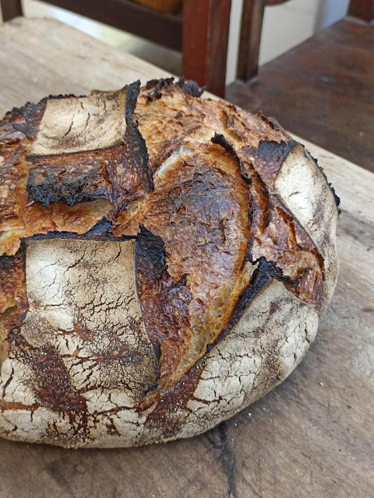
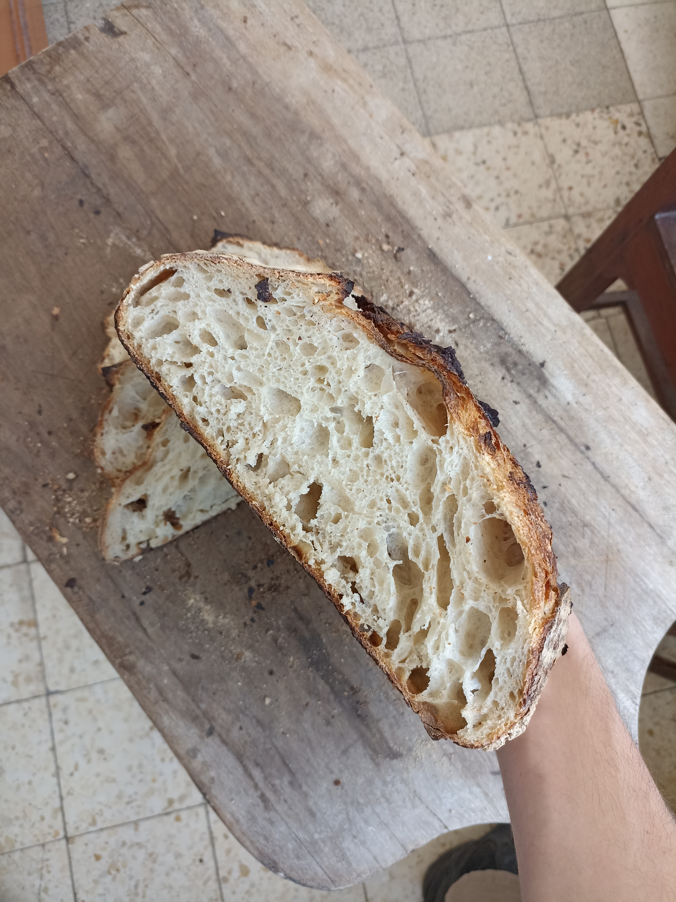
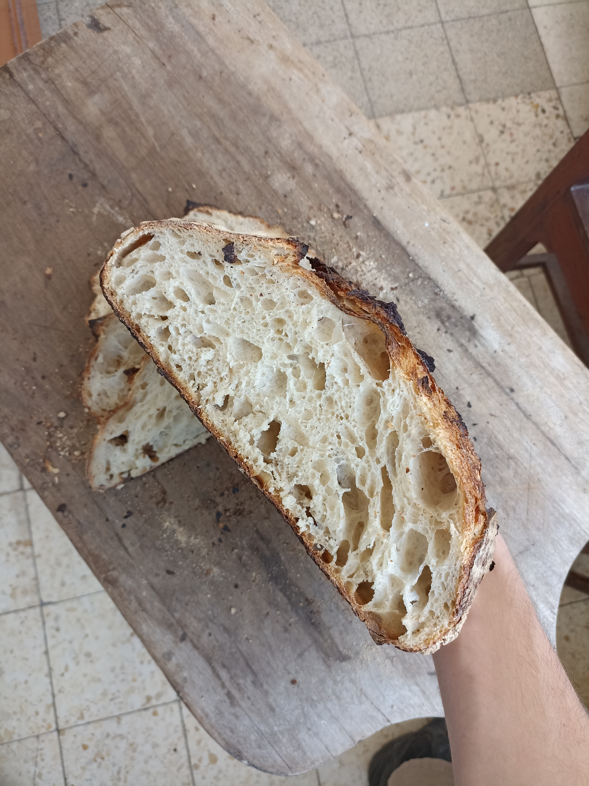
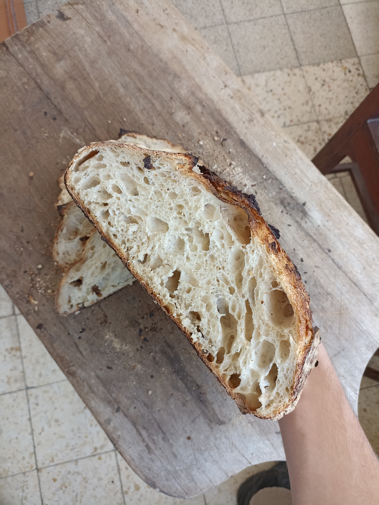
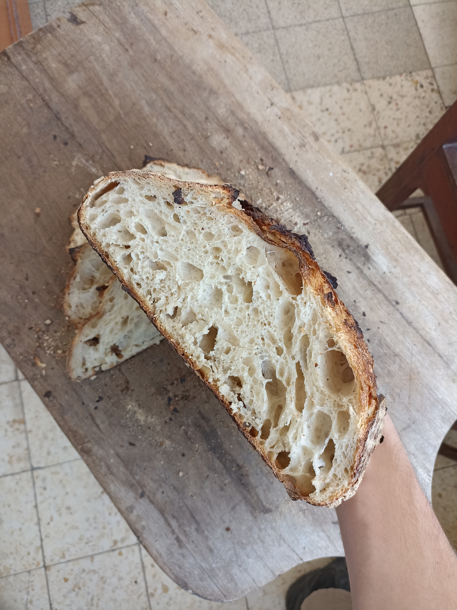

 


בואו להכיר ולהעמיק בעולם המופלא של אפיית לחמי מחמצת!

שילוב ידע תיאורטי באפיית לחמי מחמצת עם דגש על פרקטיקה ועבודה מעשית. נלמד להכיר לעומק את העולם המרתק של החיים התוססים במחמצת, את איכות חומרי הגלם והתהליכים התיאורטיים והמעשיים באפייה. נעבוד עם הידיים יחד, נכין לחם בסטנדרט גבוה, ונלמד כיצד להכין כיכרות בעלות טעם ומראה מקצועיים — והכל בעזרת מה שיש לנו כבר בבית (תנור ביתי), בלי ציוד יקר ומשוכלל, עם קמחים שניתן לקנות בכל אזור בארץ.
המטרה:
שתתחילו לאפות בבית, בביטחון, בהבנה מעמיקה ובקלות. נקבל הביתה מחמצת פעילה, ידע שייתן לנו ביטחון בתהליך, כלים ייחודיים לחישוב כמויות בצק, טכניקות לאפייה ויצירת אדים בתנור, ואיך להמציא מתכונים על בסיס מספר עקרונות פשוטים.
מי שרוצה להבין טוב יותר ולעומק את התהליכים באפיית לחמי מחמצת, להבין מהו גלוטן, לשלוט בתסיסת הבצק והמחמצת, ללמוד לעבוד עם קמחים שונים, לדעת מה משפיע על השמרים, החיידקים והאנזימים ואיך הם פועלים.
הסדנה מיועדת לכולם.ן, ואין צורך בניסיון קודם באפייה או בציוד מיוחד בבית.
נעים מאוד, שמי נועם. אגרונום ומיקרוביולוג בהכשרה, ועם ניסיון של מעל עשור באפייה ועבודה במטבחים ובמאפיות כמו Zeit für brot, Le Moulin ו-Wild Bread. אחרי שנים של ניסויים במטבח הביתי בכדי להגיע לרמת מאפייה בבית— אני כאן כדי להעביר לכם את הידע שיאפשר לכם להצליח לאפות בבית בקלות.